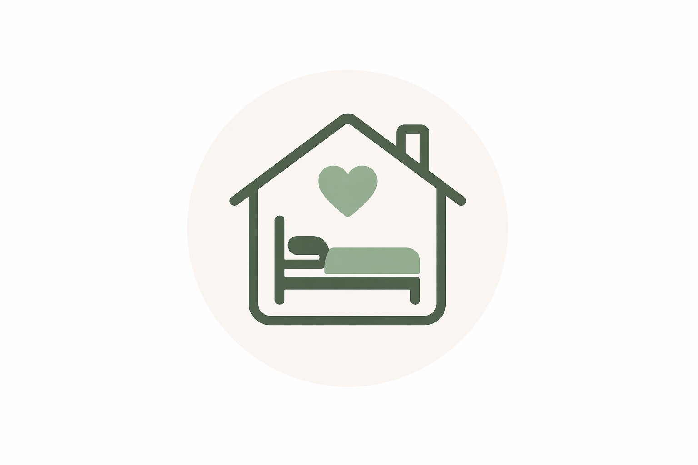
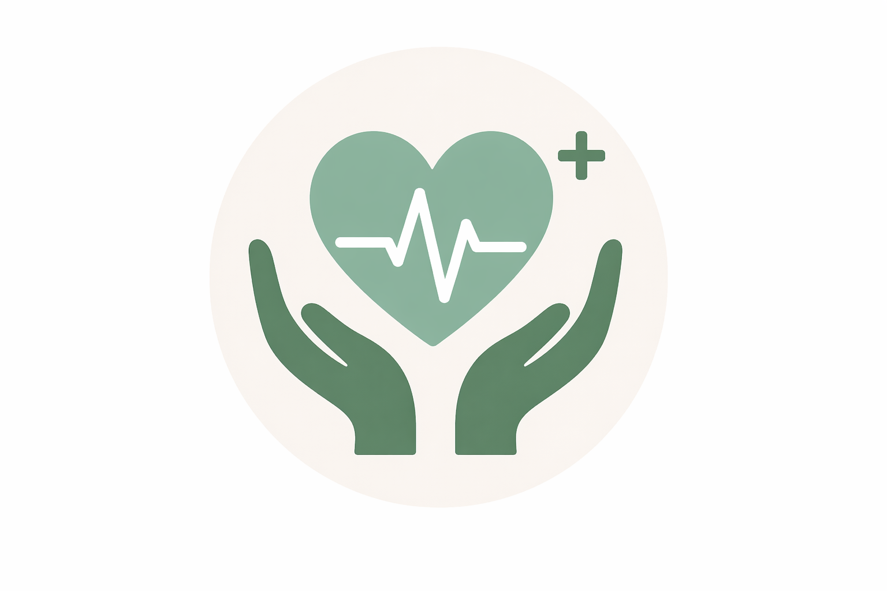

Programa "Noches seguras"

El programa de alojamiento se adapta a las necesidades de cada persona en situación de vulnerabilidad, ofreciendo desde un espacio seguro para pasar la noche con ingreso por la tarde y egreso por la mañana, hasta una estadía temporal más prolongada. Incluye normas de convivencia, acompañamiento de personal o voluntarios y articulación con otros programas de la fundación, con el objetivo de brindar contención, reorganización y favorecer la autonomía.
Programa "Salud y Bienestar"

Brinda acompañamiento y seguimiento en salud a personas en situación de vulnerabilidad, facilitando el acceso al sistema de salud pública. Incluye controles básicos, contención emocional y orientación, con derivación y seguimiento en hospitales y centros de salud, asegurando la continuidad de la atención y el bienestar integral.
Programa "Educación y Capacitación"
Brinda apoyo educativo garantizando la continuidad pedagógica de niños y adolescentes, junto con talleres de capacitación para adultos, promoviendo el desarrollo personal y la autonomía.